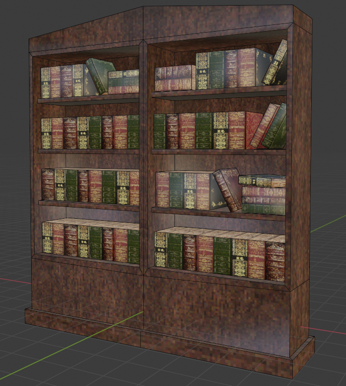
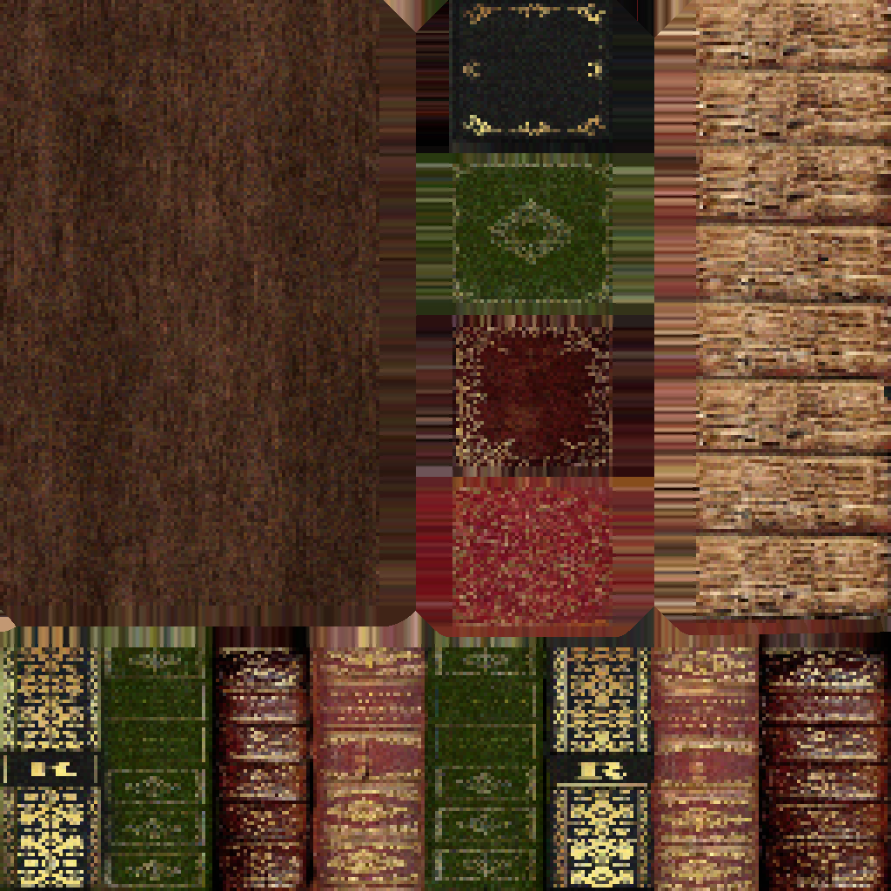
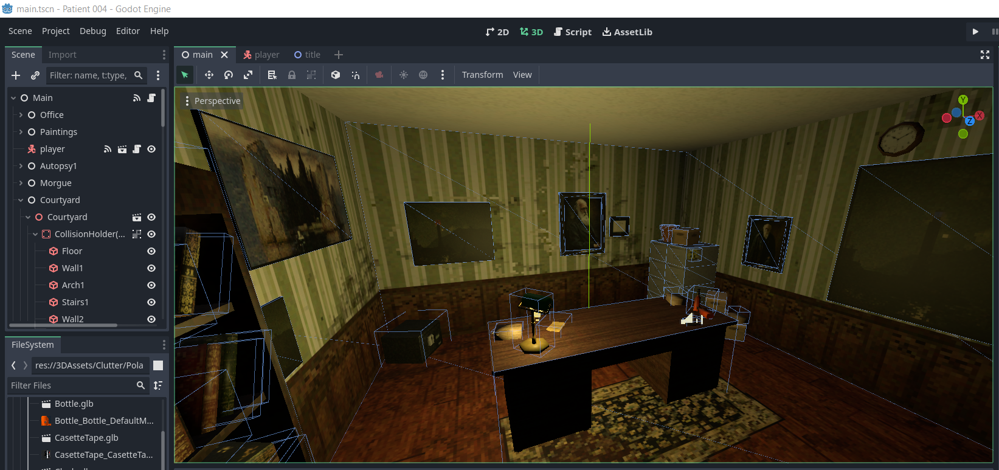
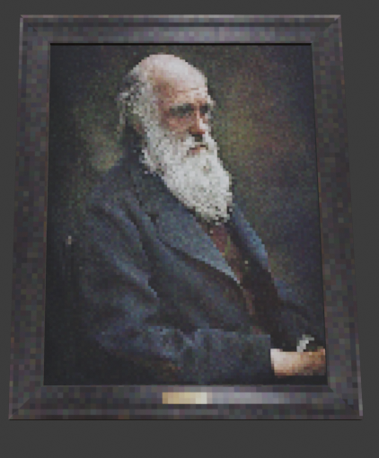

Henry Tripp Barrick
Patient 004

Patient 004 was a project developed over about 3 weeks as part of my capstone series of courses at the University of California, Santa Cruz. I served as the sole programmer, an implementer, and one of many 3D artist on the project.
The artstyle was made using a retro pixel asthetic, since our team liked the look of it. Our team took various parts of the overall map the game took place in.

The area I primarily worked on was the Office area, while providing small models and tweaks to various other parts. Texture size tended to be around the 128 pixel size as directed by our project lead. Triangle count is also very low to match this aesthetic.
 Our project was developed in the Godot engine, chosen for my familiarity and it's relative simplicity which worked well for a project with such a short timeline as ours. Our game actually only had two different scripts, a player character and a main game handler. Interaction with objects was handled by giving objects a metadata tag, which the player script would interact with

I'd also like to give a special thanks to the various classical paintings I used for the office as well as the portraits of Charles Darwin.
